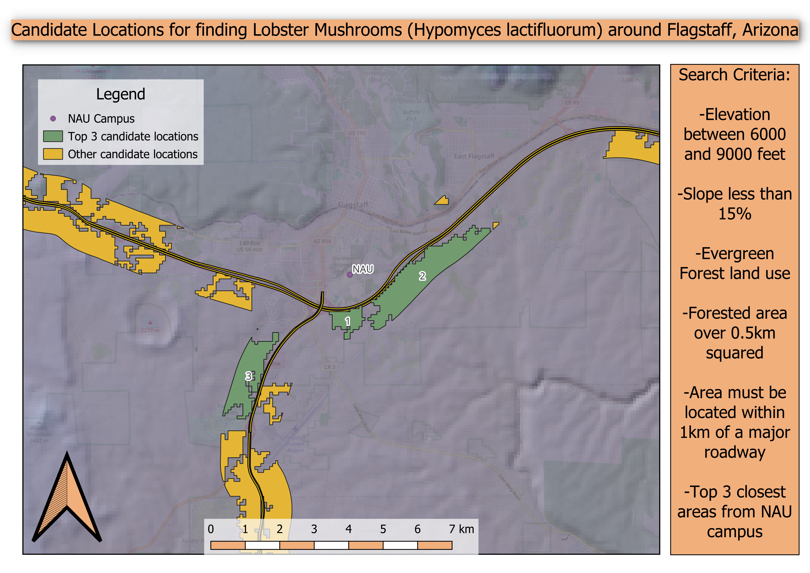

Hello! I'm a GIS professional with a background in environmental studies and fieldwork. I specialize in spatial analysis, cartography, and interpreting geographic data to support meaningful decision-making.
Below are some selected GIS projects I've worked on. You can also view my resume or find me on GitHub.
This map shows candidate locations for finding Lobster Mushrooms based on defined criteria created with QGIS. All data was downloaded from NASA and USGS, and all spatial processing was done by me using QGIS.
Email me at: wilkejohnny@aol.com